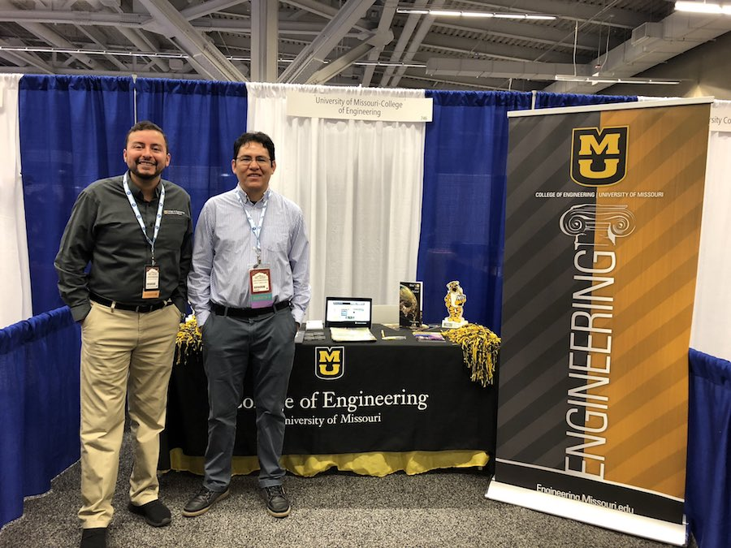

Research
Peer-Reviewed Publications
Journal
- R. Bazan, P. Calyam, A. Chandrashekara, R. Mitra, “Recommending Heterogeneous Resources for Science Gateway Applications based on Custom Templates Composition”, Elsevier Future Generation Computer Systems (FGCS) – Special Issue on Science Gateways, 2019.
- M. Dickinson, S. Debroy, P. Calyam, S. Valluripally, Y. Zhang, R. Bazan, T. Joshi, T. White, D. Xu, “Multi-cloud Performance and Security Driven Federated Workflow Management”, IEEE Transactions on Cloud Computing (TCC), 2018.
- R. Bazan, P. Calyam, S. Debroy, L. Cui, S. Seetharam, M. Dickinson, T. Joshi, D. Xu, T. Beyene, "ADON: Application-Driven Overlay Network-as-a-Service for Data Intensive Science", Transactions on Cloud Computing, 2017.
- P. Calyam, I. Jahnke, A. Mishra, R. Bazan, D. Chemodanov, M. Skubic, “Towards an ElderCare Living Lab for Sensor-based Health Assessment and Physical Therapy”, IEEE Cloud Computing Magazine (Cloud4ELE), 2017.
- A. Mishra, R. Bazan, D. Chemodanov, P. Calyam, M. Skubic, “Synchronous Big Data Analytics for Personalized and Remote Physical Therapy”, Elsevier Journal SI on Pervasive and Mobile Computing, 2015.
Conference
- R. Bazan, P. Calyam, A. Chandrashekara, S. Malhotra, “Recommending Resources to Cloud Applications based on Custom Templates Composition”, ACM Computing Frontiers Conference, 2017.
- A. Akula, P. Calyam, R. Bazan, R. Leto, “Advanced Manufacturing Collaboration in a Cloud-based App Marketplace”, ACM Computing Frontiers Conference, 2017.
- R. Bazan, P. Calyam, D. Chemodanov, W. de Donato, A. Mishra, A. Pescape, M. Skubic, “Socio-technical Approach to Engineer Gigabit App Performance for Physical Therapy-as-a-Service”, IEEE Healthcom, 2017.
- T. Nguyen, P. Calyam, R. Bazan, “Benchmarking in Virtual Desktops for End-to-End Performance Traceability”, IEEE/IFIP Workshop on QoE Centric Management (QCMan), 2015.
- R. Bazan, G.Bui, P. Calyam, B. Morago, T. Nguyen, Y. Duan, “LIDAR-based Virtual Environment Study for Disaster Response Scenarios”, IFIP/IEEE International Symposium on Integrated Network Management (IM), 2015.
- S. Ramisetty, R. Bazan, P. Calyam, J. Cecil, A. Akula, R. Leto, “Ontology Integration for Advanced Manufacturing Collaboration in Cloud Platforms”, IFIP/IEEE Intl. Symposium on IntegratedNetwork Management (IM), 2015.
- P. Calyam, S. Seetharam, R. Bazan, “GENI Laboratory Exercises Development for a Cloud Computing Course”, GENI Research and Education Experiments Workshop, 2014.
Technical Presentations and Demonstrations
- “Recommending Resources to Cloud Applications based on Custom Templates Composition” - paper presentation at ACM Computing Frontiers Conference, Siena, Italy, 2017.
- “Advanced Manufacturing Collaboration in a Cloud-based App Marketplace” - paper presentation at ACM Computing Frontiers Conference, Siena, Italy, 2017.
- “Socio-technical Approach to Engineer Gigabit App Performance for Physical Therapy-as-a-Service” - paper presentation at IEEE Healthcom, Dalian, China, 2017.
- Recommending Resources to Cloud Applications based on Custom Templates Composition – Demo Presentation at GENI NICE Engineering Conference, Irvine, California, 2016.
- Hybrid Cloud Technologies for HPC Queuing Experiments in ‘Simulation as a Service’ - Demo Presentation at GENI 24th Engineering Conference, Tempe, Arizona, 2016.
- HPC Queuing Experiments in ‘Simulation as a Service’ – Demo Presentation at GENI NICE Engineering Conference, San Francisco, California, 2015.
- “An App Marketplace for Advanced Manufacturing” - Demo Presentation at GENI 22nd Engineering Conference, Washington DC, 2015.
- "Physical Therapy as a Service" - Invited Talk/Demo at US Ignite Application Summit, Washington DC, 2015.
- “Ontology Integration for Advanced Manufacturing Collaboration in Cloud Platform” - Demo Presentation at GENI 21st Engineering Conference, Bloomington, Indiana, 2014.
- “Interactive Interface for Remote Physical Therapy” - Invited Talk/Demo at US Ignite Application Summit @ Juniper Networks, Sunnyvale, California, 2014.
- “Simulation-as-a-Service: A GENI Experiment for Advanced Manufacturing” - Demo Presentation at GENI 19th Engineering Conference at Georgia Tech, Atlanta, Georgia, 2014.
- “GENI Lab Exercises for a Cloud Computing Course” - Talk at NSF Workshop on GENI in Education, Brooklyn, NY (In conjunction with 18th GENI Engineering Conference) 2013.